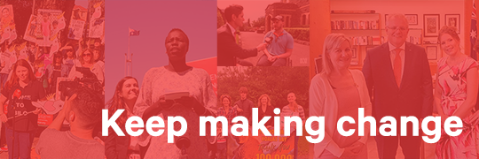

<!DOCTYPE html PUBLIC "-//W3C//DTD XHTML 1.0 Transitional //EN" "http://www.w3.org/TR/xhtml1/DTD/xhtml1-transitional.dtd">
<html xmlns="http://www.w3.org/1999/xhtml" xmlns:o="urn:schemas-microsoft-com:office:office" xmlns:v="urn:schemas-microsoft-com:vml" lang="en"></html><html lang="en">
  <head>
    <meta charset="UTF-8">
    <meta http-equiv="X-UA-Compatible" content="IE=edge">
    <meta name="viewport" content="width=device-width, initial-scale=1.0">
    <title>We miss you, Alex</title>
    <meta http-equiv="Content-Type" content="text/html; charset=UTF-8">
    
  </head>
  <body style="background-color:whitesmoke;font-family:sans-serif;">
    <div class="wrapper" style="background-color:white;height:950px;width:100%;max-width:600px;margin:auto;table-layout:fixed;">
      <table class="top" style="height:100px;width:100%;border-bottom:1px gray solid;">
        <tr>
          <td align="center">
            
          </td>
        </tr>
      </table>
      <table class="mid" style="height:600px;width:100%;border-bottom:1px gray solid;">
        <tr>
          <td align="center">
            
          </td>
        </tr>
        <tr>
          <td class="paragraph" style="padding:20px;">
            <p>Hello Alex, <br>
               <br>
               We haven’t heard from you recently and we hope all is well. <br>
               <br>
               Since you last signed a petition, thousands of new petitions have been created on Change.org that could really use your support. Check out what’s trending right now, and find the next petition to add your signature to. <br>
               <br>
               We know there’s been a lot going on in the world and maybe our emails are getting lost in the inbox with the others. But did you know that you can control the emails you receive from us? Click here to update your email preferences, to make sure that you hear about what matters most to you. <br>
               <br>
               There are amazing changes happening in your country, and we’d love you to be a part of it. <br>
               <br>
               Thank you for your support, <br>
               <br>
               — The Change.org Team </p>
          </td>
        </tr>
      </table>
      <table class="bot" style="height:200px;width:100%;padding:20px;">
        <tr>
          <td>
            <a href="#" class="botlink blink" style="color:gray;font-size:15px;font-weight:bold;">Unsubscribe from emails like this</a><br>
            <a href="#" class="botlink blink" style="color:gray;font-size:15px;font-weight:bold;">Unsubscribe from all Change.org emails</a><br>
            <a href="#" class="botlink" style="color:gray;font-size:15px;">Manage your email preferences</a> · <a href="#" class="botlink" style="color:gray;font-size:15px;">Privacy Policy</a>
            <p class="address" style="font-size:15px;">We’d love to hear from you! Contact us through our help center.</p>
            <p class="address" style="font-size:15px;">Change.org  ·  548 Market St #29993, San Francisco, CA 94104-5401, USA</p>
          </td>
        </tr>
      </table>
    </div>
  </body>
</html>